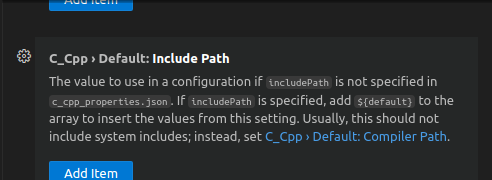
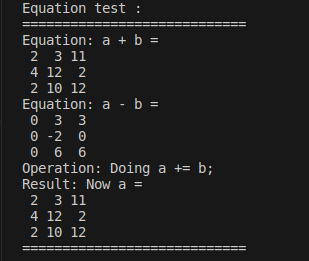
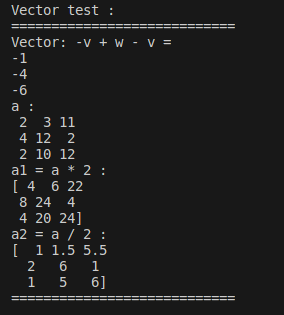
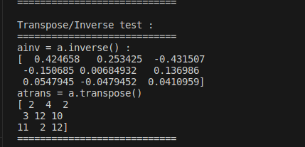
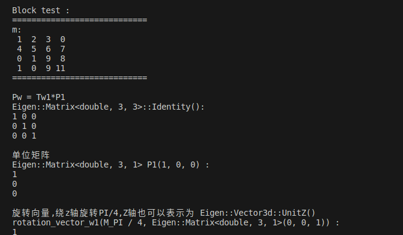
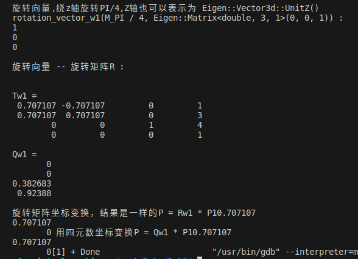

在此之前,我们先解决一个问题:引用eigen库报错找不到对应的文件，此时需要在c++插件中设置include_path:"usr/local/include/eigen3"即可
[关于usr
一、由来
曾几何时，我总觉得这个词非常奇怪，如果说是 user 的缩写词，那么未免太过于不优雅（仅仅缩写掉了一个 e 单词，反而造成了拼写错误的极大可能，何必呢）。于是我上网搜索了下 user 的来历。
二、解释 这是我复制这一篇博客 linux的usr目录的全称是什么？ 的解释，我觉得挺好的：
usr是user的缩写，是曾经的HOME目录，然而现在已经被/home取代了，现在usr被称为是Unix System Resource，即Unix系统资源的缩写。
/usr 是系统核心所在，包含了所有的共享文件。它是 unix 系统中最重要的目录之一，涵盖了二进制文件，各种文档，各种头文件，还有各种库文件；还有诸多程序，例如 ftp，telnet 等等。
曾经的 /usr 还是用户的家目录，存放着各种用户文件 —— 现在已经被 /home 取代了（例如 /usr/someone 已经改为 /home/someone）。现代的 /usr 只专门存放各种程序和数据，用户目录已经转移。虽然 /usr 名称未改，不过其含义已经从“用户目录”变成了“unix 系统资源”目录。值得注意的是，在一些 unix 系统上，仍然把 /usr/someone 当做用户家目录，如 Minix
简单来说，我们就把 usr 记作成 Unix System Resource 就可以了，非常的典雅完美，不像 user 那样的牵强。 ]
[我们来思考一个问题：为什么在C++中使用Eigen库进行线性代数计算?
根据网上的回答：Eigen库是一个开源的C++线性代数库，它提供了高效、易用的接口，可以方便地进行各种线性代数计算。Eigen库可以用于机器学习、计算机图形学和科学计算等领域，被广泛应用于各种算法和程序中。 Eigen库的优点包括：
高效：Eigen库使用SSE指令集和BLAS库进行优化，可以实现高效的矩阵运算。 ]
使用Eigen库进行线性代数计算
这份报告展示了在C++中使用Eigen库进行线性代数计算的各种操作。
矩阵运算
矩阵加法
矩阵加法是将两个矩阵对应位置的元素相加得到新的矩阵。
矩阵减法
矩阵减法是将两个矩阵对应位置的元素相减得到新的矩阵。
标量乘法
标量乘法是将矩阵中的每个元素乘以一个标量得到新的矩阵。
标量除法
标量除法是将矩阵中的每个元素除以一个标量得到新的矩阵。
矩阵求逆
矩阵求逆是求出原矩阵的逆矩阵，用于解决线性方程组等问题。
矩阵转置
矩阵转置是将矩阵的行和列对调得到新的矩阵。
向量操作
块操作
块操作是将多个向量合并成一个更大的向量。
变换操作
旋转矩阵
Eigen::AngleAxisd rotation_vector_w1(M_PI / 4, Eigen::Matrix<double, 3, 1>(0, 0, 1));
Eigen::Matrix<double, 3, 3> Rw1 = rotation_vector_w1.matrix();
旋转矩阵是用来描述物体在三维空间中的旋转变换。
同构变换
Eigen::Isometry3d Tw1 = Eigen::Isometry3d::Identity();
Tw1.rotate(Rw1);
Eigen::Matrix<double, 3, 1> tw1(1, 3, 4);
Tw1.pretranslate(tw1);
同构变换是包括旋转和平移的组合变换，用于描述物体在空间中的姿态和位置。
四元数
四元数是一种用来表示旋转的数学工具，常用于姿态控制和运动规划中。
解释和心得体会
Eigen库提供了丰富的功能和高效的算法，能够方便地进行各种线性代数计算。通过这些操作，我们可以实现矩阵运算、向量操作和变换操作，为机器人学、计算机图形学和科学计算等领域提供了强大的支持。深入理解线性代数计算的原理和应用，有助于我们更好地理解和解决复杂的数学和工程问题。
结果展示
     
#include <iostream>
#include <ctime>
#include <eigen3/Eigen/Geometry> //各种平移和旋转运算
#include <Eigen/Core>
#include <Eigen/Dense>
using namespace std;
int main()
{
//sum/difference
Eigen::Matrix3d a;
a << 1,3,7,
2,5,1,
1,8,9;
Eigen::MatrixXd b(3, 3);
b << 1,0,4,
2,7,1,
1,2,3;
std::cout << "Equation test : " << endl;
std::cout << "============================" << std::endl;
std::cout << "Equation: a + b =\n" << a + b << std::endl;
std::cout << "Equation: a - b =\n" << a - b << std::endl;
std::cout << "Operation: Doing a += b;" << std::endl;
a += b;
std::cout << "Result: Now a =\n" << a << std::endl;
std::cout << "============================" << std::endl;
std::cout << std::endl;
std::cout << "Vector test : " << endl;
std::cout << "============================" << std::endl;
Eigen::Vector3d v(1, 2, 3);
Eigen::Vector3d w(1, 0, 0);
std::cout << "Vector: -v + w - v =\n" << -v + w - v << std::endl;
cout << "a : " <<endl;
cout << a << endl;
auto a1 = a * 2;
auto a2 = a / 2;
cout << "a1 = a * 2 :" <<endl;
cout << "[" << a1 << "]" << endl;
cout << "a2 = a / 2 :" <<endl;
cout << "[" << a2 << "]" << endl;
cout << "============================" << endl;
cout << std::endl;
cout << "Transpose/Inverse test : " << endl;
cout << "============================" << endl;
Eigen::Matrix<double, 3, 3> ainv = a.inverse();
Eigen::Matrix<double, 3, 3> atrans = a.transpose();
cout << "ainv = a.inverse() : " << endl;
cout << "[" << ainv << "]" <<endl;
cout << "atrans = a.transpose()" << endl;
cout << "[" << atrans << "]" <<endl;
cout << "============================" << endl;
cout << std::endl;
cout << "Block test : " << endl;
cout << "============================" << endl;
Eigen::MatrixXf m(4, 4);
m << 1,2,3,0,
4,5,6,7,
7,8,9,8,
3,6,9,11;
Eigen::MatrixXf m2(2,2);
m2<<0,1,
1,0;
m.block(2, 0, 2, 2) = m2;
cout << "m:\n" << m << endl;
cout << "============================" << endl;
//Pw = Tw1*P1
cout<<endl;
Eigen::Matrix<double, 3, 3> Rw1_matrix = Eigen::Matrix<double, 3, 3>::Identity();
cout << "Pw = Tw1*P1" << endl;
cout << "Eigen::Matrix<double, 3, 3>::Identity(): " << endl << Rw1_matrix << endl;
// 单位矩阵
cout<<endl;
Eigen::Matrix<double, 3, 1> P1(1, 0, 0);
cout << "单位矩阵" << endl;
cout << "Eigen::Matrix<double, 3, 1> P1(1, 0, 0) :" << endl << P1 << endl;
// 旋转向量,绕z轴旋转PI/4，Z轴也可以表示为 Eigen::Vector3d::UnitZ()
cout<<endl;
Eigen::AngleAxisd rotation_vector_w1(M_PI / 4, Eigen::Matrix<double, 3, 1>(0, 0, 1));
cout << "旋转向量,绕z轴旋转PI/4,Z轴也可以表示为 Eigen::Vector3d::UnitZ()" << endl;
cout << "rotation_vector_w1(M_PI / 4, Eigen::Matrix<double, 3, 1>(0, 0, 1)) :" << endl << P1 << endl;
// 旋转向量 -- 旋转矩阵R
cout<<endl;
Eigen::Matrix<double, 3, 3> Rw1 = rotation_vector_w1.matrix();
cout << "旋转向量 -- 旋转矩阵R :" << endl;
Rw1_matrix = rotation_vector_w1.toRotationMatrix(); // 和上面一样的
// Rw1 -- 欧拉角
cout<<endl;
Eigen::Vector3d euler_angles = Rw1.eulerAngles(2, 1, 0); // ZYX，roll pitch yow
// 变换矩阵T Isometry3d类型, 一定要初始化为Identity()，否则为随机数
cout<<endl;
Eigen::Isometry3d Tw1 = Eigen::Isometry3d::Identity();
Tw1.rotate(Rw1);
Eigen::Matrix<double, 3, 1> tw1(1, 3, 4);
Tw1.pretranslate(tw1);
cout << "Tw1 = \n" << Tw1.matrix() << endl;
Eigen::Matrix<double, 3, 1> Pw = Tw1 * P1;
// 用T坐标变换，相当于 Rw1 * P1 + tw1
// 四元数
cout<<endl;
Eigen::Quaterniond Qw1 = Eigen::Quaterniond(Rw1); // Rw1 -- Qw1
Qw1 = Eigen::Quaterniond(rotation_vector_w1); // 和上面一样 旋转向量--Qw1
cout << "Qw1 = " << endl << Qw1.coeffs() << endl; //(qx,qy,qz,qw) 实部在后面
cout<<endl;
Eigen::Matrix<double, 3, 1> P = rotation_vector_w1 * P1; // 用旋转向量变换坐标
P = Rw1 * P1; // 旋转矩阵坐标变换，结果是一样的
cout<<"旋转矩阵坐标变换，结果是一样的" << endl <<"P = Rw1 * P1"<<P;
P = Qw1 * P1; // 用四元数坐标变换
cout<<" 用四元数坐标变换"<< endl << "P = Qw1 * P1"<<P;
return 0;
}